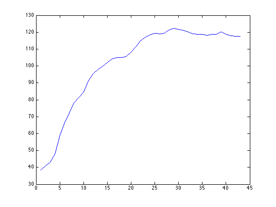
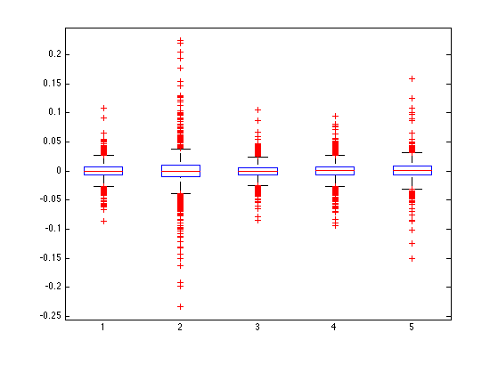
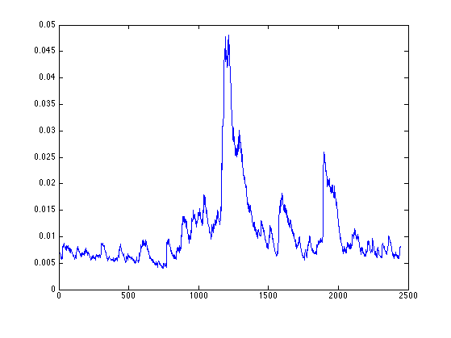
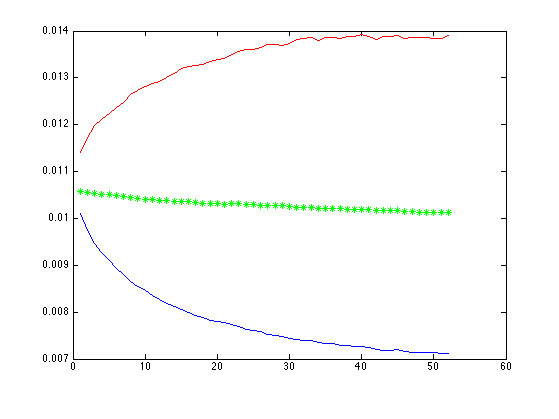

MATLAB Tutorial 5 - Mathieu ZARADZKI
More of the same things
Contents
DEMO 1 - Importing a CSV file using Matlab commands ...
... using the Import UI function is too inconvenient in the long run.
So please take time to remember this command that we already used in the
econometrics class to store the content of a file into a *dataset*.
Note that a *dataset* is similar to a *struct* as you can see its
content by browsing the Worspace and using the "." notation such as
ds.SBUX to get Starbucks stock prices.
ds = dataset('File', 'stockmarketdataset.csv', 'Delimiter', ',');
length(ds.SBUX)
ans =
759
DEMO 2 - Boosting your Matlab with a Data API
Computing is about standing between Input and Output.
So without any Input it gets really dull.
Save the +Quandl folder from this page with your other Matlab files and
test the following line "data = Quandl.get('FRED/JPNCPIBLS');"
LINK: https://github.com/quandl/MatlabQuandl.auth('8aVZ3CksqJmfEozdFNbB');
JPNCPI = Quandl.get('FRED/JPNCPIBLS');
plot(JPNCPI.data);

SETUP - We will this for our questions
IBMdata = getstockdata('IBM');
JPMdata = getstockdata('JPM');
WMTdata = getstockdata('WMT');
MMMdata = getstockdata('MMM');
XOMdata = getstockdata('XOM');
SPXdata = getstockdata('Index_SPX500');
QUESTION 1 - Prior data inspection
Before we try to study portfolios with the above stocks lets first see
how their are distributed.
For this please create a "Box Plot" of their returns.
ANSWER TO #1
stockmatrix = [IBMdata.logreturns, JPMdata.logreturns, WMTdata.logreturns, MMMdata.logreturns, XOMdata.logreturns];
boxplot(stockmatrix);

QUESTION 2 - Jamie Dimon's office
The story goes that JP Morgan CEO (way before Dimon's tenure) asked his
Risk Department to come with a SINGLE number to measure the bank market risk
exposure.
This is how the Value At Risk (VaR) was created.
Define a portfolio (the weights) of the above stocks and compute its VaR.
Please do so by two methods:
a) by looking at the sample data quantiles
b) by assuming a normal distribution (matching mean/variance) (parametric approach)
TIP: here we simply ask for the 1-period ahead 5% VaR.
TIP: nobody is scared of making more money than predicted so the VaR is
defined on one side of the distribution only.ANSWER TO #2
myWeights = ones(5,1) * 0.20;
myPTFLreturns = stockmatrix * myWeights;
SampleVar1 = prctile(myPTFLreturns, 5)
SampleVar5 = prctile(myPTFLreturns, 1)
NormalVar5 = norminv(0.05, mean(myPTFLreturns), std(myPTFLreturns))
NormalVar1 = norminv(0.01, mean(myPTFLreturns), std(myPTFLreturns))
SampleVar1 =
-0.0188
SampleVar5 =
-0.0371
NormalVar5 =
-0.0209
NormalVar1 =
-0.0297
QUESTION 3 - Lets do another optimization
Re-use the optimisation method seen in the 4th class to optimize the
Sharpe Ratio of the portfolio BUT adding a new constraint.
We only want to keep the portfolio that have MORE (less negative)
skewness than the INDEX.
The reason is that negative skewness is related to extreme loss risk.
TIP: We defined Sharpe Ratio objective as: mean(logreturns) / std(logreturns)
ANSWER TO #3
NbSims = 10000;
BESTSHARPE = -2;
for i = 1 : NbSims
weights = rand(5,1);
weights = weights / sum(weights);
PTFLreturns = stockmatrix * weights;
if skewness(PTFLreturns) > skewness(SPXdata.logreturns)
sharperatio = mean(PTFLreturns) / std(PTFLreturns);
if sharperatio > BESTSHARPE
i
BESTSHARPE = sharperatio
BESTWEIGTHS = weights;
end
end
end
i =
1
BESTSHARPE =
0.0149
i =
2
BESTSHARPE =
0.0176
i =
6
BESTSHARPE =
0.0194
i =
21
BESTSHARPE =
0.0210
i =
65
BESTSHARPE =
0.0221
i =
231
BESTSHARPE =
0.0222
i =
1071
BESTSHARPE =
0.0230
i =
1433
BESTSHARPE =
0.0233
QUESTION 4 - Working as a Quant Analyst ...
... much more realistic than taking over Jamie Dimon for a first job.
In the case of a 5 stocks portfolio allocation, can you optimize the
weights using a *function maximization* of the Sharpe ratio?
So this time we dont use simulations anymore.
TIP: you can use "fmincon" function to deal with constraints:
http://www.mathworks.fr/help/optim/ug/fmincon.html
It will look something like this:
[BestWs, BestSR] = fmincon(someSRFunction, Weights0, MATineq, VECineq, MATeq, VECeq, LwBnd, HiBnd);
In this problem the constraints are:
a) sum(weights) = 1 (equality)
b) weights(1) > 0, ... ... , weights(5) > 0 (Lower Bounds)
ANSWER TO #4
NOTE: in MATLAB we minimize (-goal) instead of maximizing (+goal)
After cheking the help for *fmincon* we find that:
W0 = [0.2;0.2;0.2;0.2;0.2]
MATineq = []
VECineq = []
MATeq = [1 1 1 1 1]
VECeq = [1]
LB = [0;0;0;0;0]
minusSR = @(Ws) -mean(stockmatrix * Ws) / std(stockmatrix * Ws);
[BestWs, BestSR] = fmincon(minusSR, [0.2;0.2;0.2;0.2;0.2], [], [], [1 1 1 1 1], [1], [0;0;0;0;0]);
BestWs
-BestSR
Warning: The default trust-region-reflective algorithm does not solve problems
with the constraints you have specified. FMINCON will use the active-set
algorithm instead. For information on applicable algorithms, see Choosing the
Algorithm in the documentation.
Warning: Your current settings will run a different algorithm (interior-point)
in a future release.
Local minimum possible. Constraints satisfied.
fmincon stopped because the predicted change in the objective function
is less than the default value of the function tolerance and constraints
are satisfied to within the default value of the constraint tolerance.
Active inequalities (to within options.TolCon = 1e-06):
lower upper ineqlin ineqnonlin
2
3
4
BestWs =
0.4709
-0.0000
0.0000
0
0.5291
ans =
0.0236
QUESTION 5 - Still working in the Risk Department
Another popular concept in Risk Management than came from JPM is the
EWMA volatility model.
Can you write a function to compute it?
Can you plot it in the case of the SPX500?
TIP: you can do it with a loop given its recursive/iterative definition.
ANSWER TO #5
lambda = 0.95;
vol = 0;
lag = 70;
ewmavols = nan(length(SPXdata.logreturns)-lag,1);
for i=1:length(SPXdata.logreturns)
vol = sqrt(lambda*vol*vol + (1-lambda)*SPXdata.logreturns(i)^2);
if i>=lag
ewmavols(i-lag+1) = vol;
end
end
plot(ewmavols);

QUESTION 6 - GARCH iteration
A fundamental model in volatility modeling (due to Engle/Bollerslev)
is GARCH one.
Like the EWMA it allows to define the variance recursively.
Assuming you have Kappa, Alpha and Beta for a GARCH(1,1) can you
simulate the future value of the volatility process?
ANSWER TO #6
opts = optimset('Display','off');
[Kappa, Alpha, Beta] = ugarch(SPXdata.logreturns, 1, 1, opts);
Hinfinity = Kappa/(1-Alpha-Beta);
garchvols = nan(10000, 52);
for n = 1 : 10000
H = Hinfinity;
for j = 1 : 52
H = Kappa + Alpha*H + Beta*H*(randn^2);
garchvols(n,j) = sqrt(H);
end
end
plot(prctile(garchvols,10), '-b');
hold on;
plot(prctile(garchvols,90), '-r');
plot(mean(garchvols), '*g');
hold off;
Warning: The default trust-region-reflective algorithm does not solve problems
with the constraints you have specified. FMINCON will use the active-set
algorithm instead. For information on applicable algorithms, see Choosing the
Algorithm in the documentation.
Warning: Your current settings will run a different algorithm (interior-point)
in a future release.

QUESTION 7 - Finance and Factors colliding (difficult but not too much)
During tutorial 4 we saw how to estimate factor-based covariance matrix
for a set of asset price returns?
We did this using the CAPM 1-factor model.
Using the same approach can you derive a factor-based covariance matrix
but this time assuming each stock behaves like in the Fama-French model?
Again to do the calculations (you need some paper+pencil before you do
any serious coding) you need to assume that the residuals are
independant from one stock to another one.